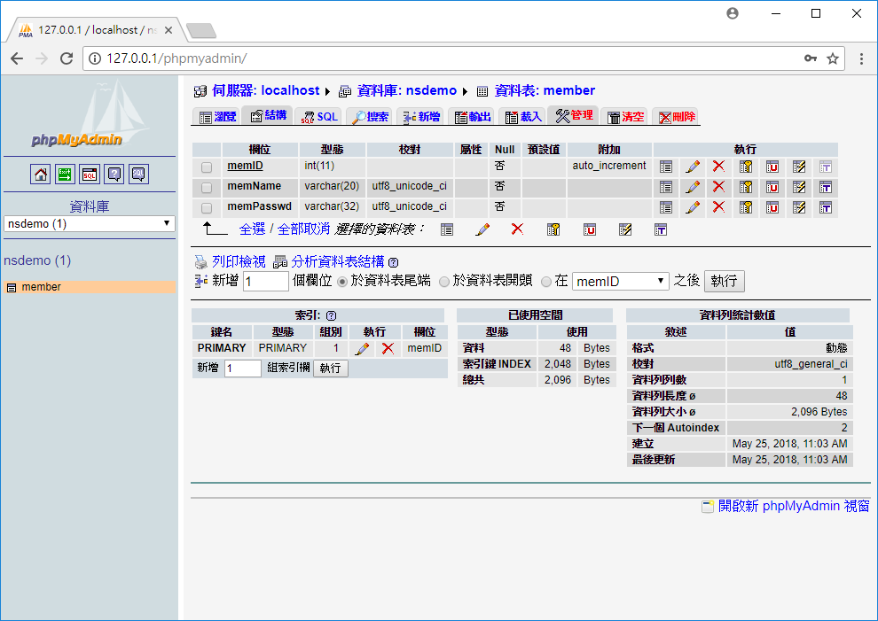
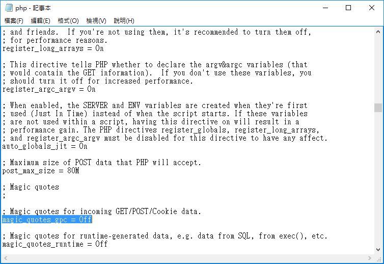
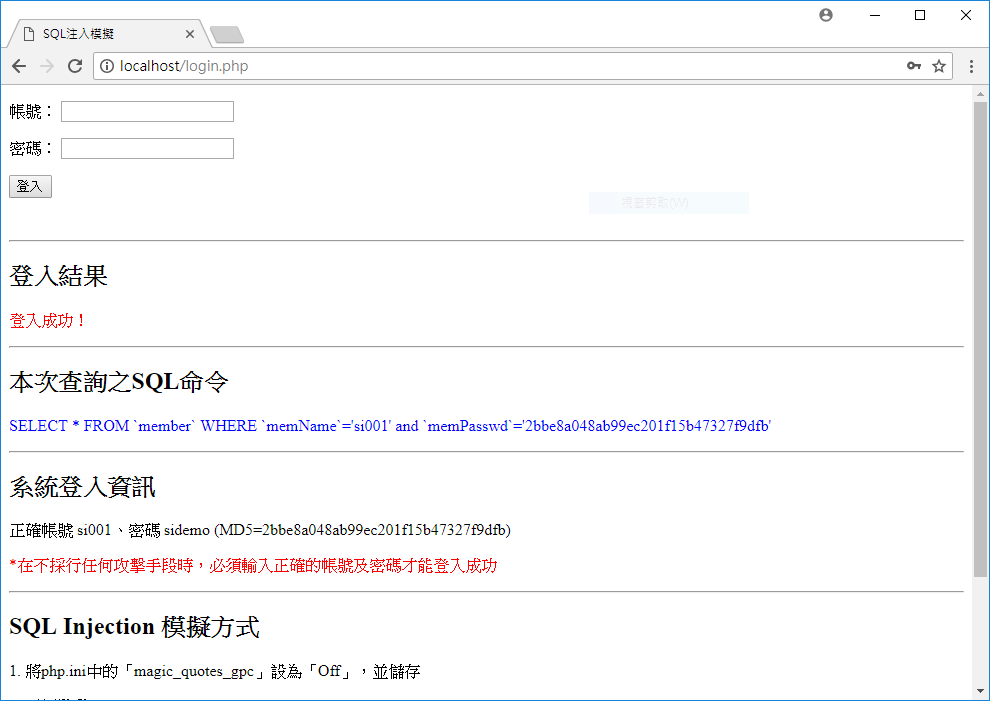
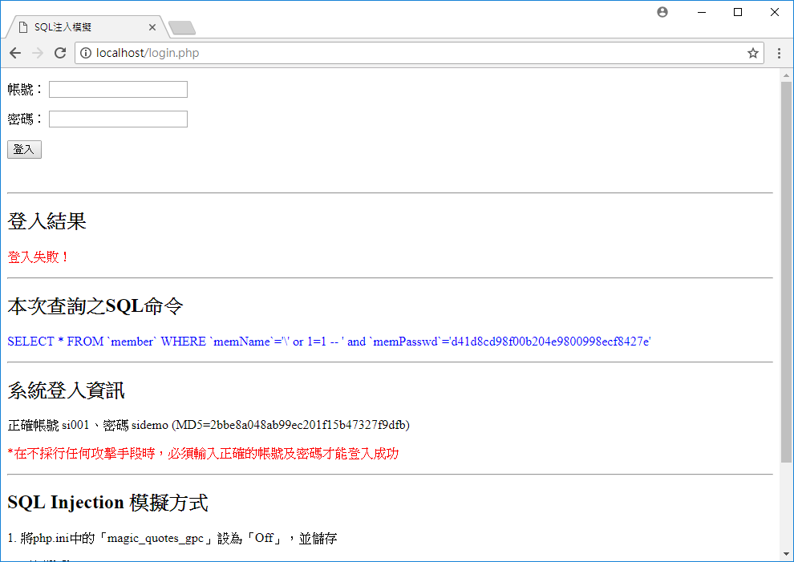

SQL Injection (已失效)
環境設定
1. Windows 安裝 AppServ
2. MySql登入密碼為abc123 (若欲設定其他密碼, 須自行更新 connect.php 中的密碼欄位)
資料庫建立
1. 於phpMyAdmin中匯入sqlCmd.sql，完成資料庫與資料表之建立
模擬程式執行方式
1. 使用瀏覽器連線至Apache之www目錄下，您所放置 login.php 之位置
2. 參考該頁面的使用說明
Windows與AppServ環境下，關閉PHP過濾敏感字元之設定方式
1. 開始\所有程式\AppServ\Configuration Server\PHP Edit the php.ini Configuration File
2. 系統將開啟 php.ini
3. 透過 Ctrl + F 找到「magic_quotes_gpc」，將其值設定為「Off」
4. 開始\所有程式\AppServ\Control Server by Service\Apache Restart
結果
正常登陸(成功)
SQL Injection(失敗)
